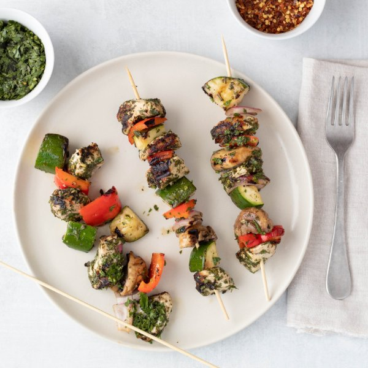

Chimichurri Chicken & Grilled Vegetable Kebabs

Prep Time
35 min
Nutrition (per serving)
673.5 kcalCalories
43.2 gProtein
13.8 gCarbs
50 gFat
Full nutrition table
| Calories | 673.5 kcal |
| Total fat | 50 g |
| Saturated fat | 9.8 g |
| Trans fat | 0.1 g |
| Cholesterol | 124.2 mg |
| Sodium | 112.3 mg |
| Carbohydrates | 13.8 g |
| Fiber | 4.6 g |
| Sugars | 7.6 g |
| Protein | 43.2 g |
| Potassium | 1369.8 mg |
| Calcium | 76.7 mg |
| Iron | 3.5 mg |
| Vitamin A | 245 IU |
| Vitamin C | 122.8 mg |
| Vitamin D | 5.7 IU |
Cookware
Ingredients
- 1 ½ lbchicken breasts, boneless skinless
- 1 small bunchcilantro
- 2 clovesgarlic
- 1 small bunchItalian (flat-leaf) parsley
- 2red bell peppers
- 1 mediumred onion
- ½ lbwhite mushrooms
- 2 mediumzucchini squash
- black pepper
- crushed red pepper
- cumin, ground
- extra virgin olive oil
- oregano, dried
- red wine vinegar
- salt
- virgin coconut oil
Steps
- If using wooden skewers, place 6-8 skewers in a shallow dish of water to soak until you are ready to use them.
- Wash and dry the fresh produce.1 small bunch Italian (flat-leaf) parsley
1 small bunch cilantro
2 red bell peppers
2 medium zucchini squash
½ lb white mushrooms - Shave parsley and cilantro leaves off the stems; discard the stems and mince the leaves; transfer to a large bowl.
- Peel and mince garlic and add to the bowl.2 cloves garlic
- To make the chimichurri sauce, add olive oil, red wine vinegar, and spices to the bowl with the fresh herbs and garlic. Stir to combine. Pour half of the sauce into a small bowl and set aside.½ cup extra virgin olive oil
¼ cup red wine vinegar
1 tsp oregano
½ tsp cumin
¼ tsp crushed red pepper
1 tsp salt - Cut chicken into 1-inch cubes. Add to the medium bowl with half of the chimichurri sauce and stir to coat.1 ½ lb chicken breasts, boneless skinless
- Peel and chop onion into 1-inch pieces and add to another medium bowl.1 medium red onion
- Seed the peppers and chop into 1-inch pieces. Halve zucchinis lengthwise, then slice crosswise into 1-inch half rounds; halve the mushrooms. Add veggies to the bowl with the onions.
- Add oil, salt, and pepper to the veggies and toss until well coated.¼ cup extra virgin olive oil
1 tsp salt
½ tsp black pepper - Thread chicken and veggies onto skewers and place on a plate. Alternatively, you can cook the chicken and veggies directly on the grill/skillet without using skewers.
- Heat a grill pan, outdoor grill, or skillet over medium-high heat.
- When hot, coat grill or bottom of grill/skillet with oil; add the kebabs (as many as will fit). Cook until vegetables are tender, and chicken is cooked through, 4-6 minutes per side. Transfer to a plate and loosely cover with foil. Repeat with remaining kebabs.1 tbsp virgin coconut oil
- To serve, divide kebabs between plates, and top with the remaining chimichurri sauce. Enjoy!